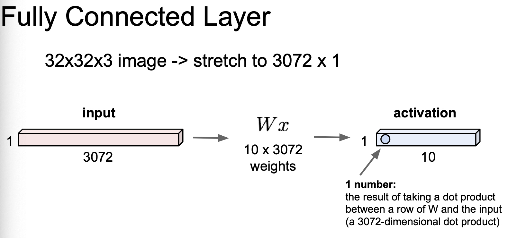
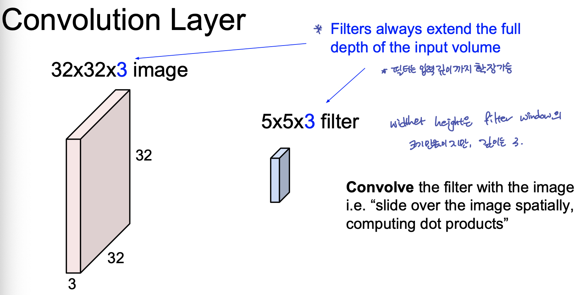
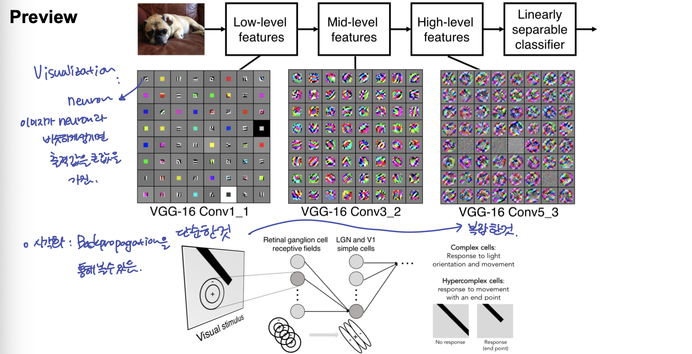
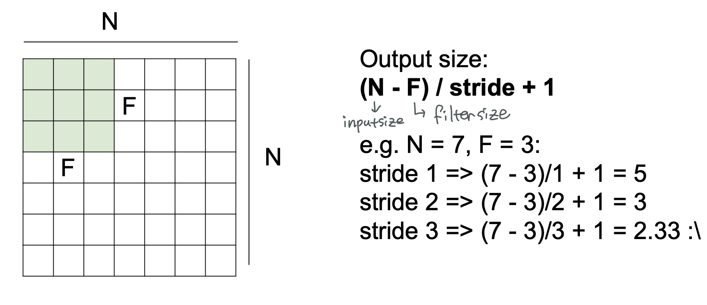

![[Python] 쉽게 쓰여진 Decorator](/images/thumbnail.svg)
Lecture 05: Convolutonal Neural Networks
- 이 글은, Standford University 의 CS231n 강의를 듣고 스스로 정리 목적을 위해 적은 글입니다.
1. Convolution Layer
1-1. Fully Connected Layer 와 Convolution Layer 의 비교
32 x 32 x 3 image 가 있다고 하자. network 에 주입하기 위해, 1 x 3072 로 핀 data 를 상상해 보자.
Fully Connected Layer 의 경우, 아래 그림 처럼, Weight 과 dot product 가 수행되어, activation 값이 나오게 된다. 이 때, activation 의 갯수는 W 의 크기에 따른다.

Fully Connected Layer 의 경우, 사진이라는 공간적 구조(Spatial Structure) 가 중요한 data 에 대해, 공간적인 정보를 다 잃어버리는 문제가 발생한다. 공간적 정보를 보존하기 위해 Convolution Layer 를 사용한다.
1-2. Convolution Layer Overview

이 때, 실제 convolution 계산은 image 의 filter 크기 만큼의 matrix 를 vectorize 한 후, filter vector 와 dot product 로 수행한다고 한다. 따라서 이 때 헷갈리지 않도록 할 것은, 한번의 Convolution 연산 결과는 하나의 scalar value 가 된다. 따라서, 하나의 filter 가 이미지 한 장을 훑어 내려간다면, 원본 이미지보다는 조금 작은 depth 가 1인 activation map 이 결과로 나온다.

따라서 activation map 의 깊이(channel 수)는, filter 의 갯수 와 동일하다. 여러개의 필터는 이미지의 각기 다른 특징을 추출하려는 의도에서 사용된다.
그 후, 이 Convolution 의 결과인 activation map 을 비선형 함수(ReLU 등)에 통과 시킨다.
여러 유명한 ConvNet 들은 이렇게, Convolution Layer 와 비선형함수를 반복적으로 나열 한 Network 라고 볼수 있다
1-3. Convolution Layer 의 결과물
이렇게 여러 계층의 Convolution Layer를 쌓는 것은, 가장 아래 Layer 부터 높은 Layer 까지 단순한 feature → 복잡한 feature 를 뽑아 내는 것으로 볼 수 있다.

1-4. Convolution Layer 연산

filter 가 이미지를 훑고 지나가면서 convolution 연산을 한 후, 나온 결과는 원본 이미지보다 그 크기가 작아지게 된다. 그 정도는 filter 의 크기와 filter 가 훑고 지나가는 간격인 stride 에 따라 바뀌게 된다.
$$output ;size = (N-F)/stride + 1$$
문제점:
convolution 연산의 문제는 이미지의 모서리에 있는 정보는 가운데에 있는 이미지의 정보보다 적게 추출 되는 문제가 있다.(filter 가 모서리를 넘어서는 이동 할 수 없으므로)
convolution layer 를 반복적으로 지나가다 보면, map의 크기가 매우 빠르게 작아지게 된다.
이를 위해 적용하는 것이 Padding 이다.
1-5. Padding
모서리에 정보를 얻기 위해 이미지이 외곽에 숫자를 채워 주는 방법. 이 때, 많이 사용하는 방법은 zero-padding. zero-padding 외에도 다양한 방법이 있다.
2. Pooling Layer
Parameter 의 갯수를 줄이기 위해, 우리가 ConvLayer 를 통해 뽑아낸 image 를 작게 만드는 Layer 이다. 즉, Downsampling 을 위한 것.
Maxpooling 의 intuition : 앞선 layer filter 가 각 region 에서 얼마나 활성 되었는지 보는 것이다.
3. Typical Architecture
[[(Conv → RELU) * N → Pool] * M → (FC → RELU) * K ] → SOFTMAX
- N : ~ 5
- M : Large
- K : 0 ~ 2
- ResNet, Google net 등은 이 방식을 훨씬더 뛰어넘음